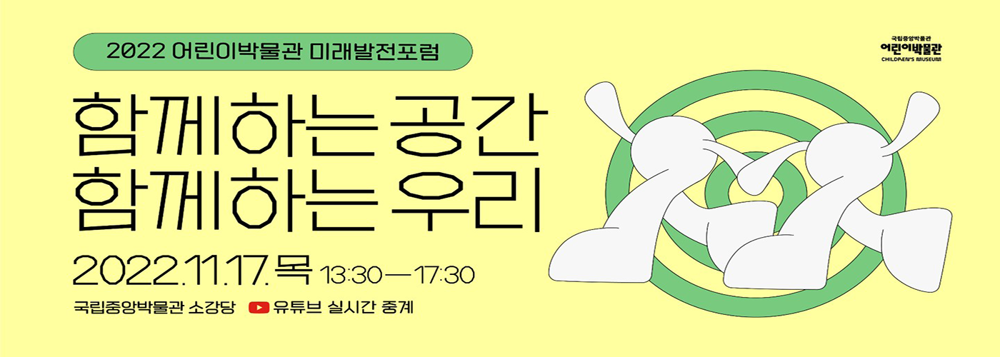
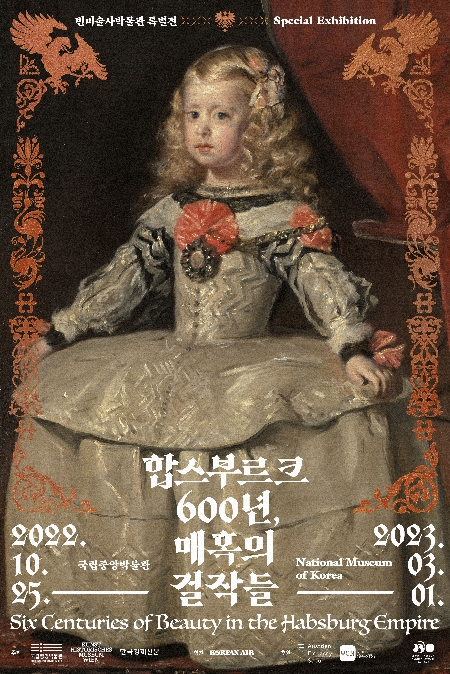
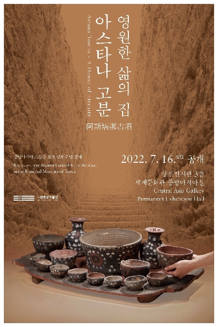

합스부르크 600년, 매혹의 걸작들 - 빈미술 사박물관 특별전
2022-10-25~2023-03-01
대한제국 첫 궁중 연회
2022-09-06~2022-12-25
백제 귀엣-고리 : 자세히 보아야 예쁘다
2022-09-27~2023-02-23
일본 불교조각의 세계
2022-04-05~2023-10-09
야금: 위대한 지혜
2022-09-30~2022-12-111

영원한 삶의 집, 아스타나 고분
2022-07-16~2023-07-15
TOP